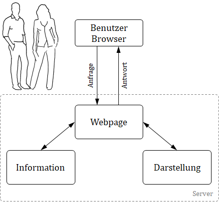
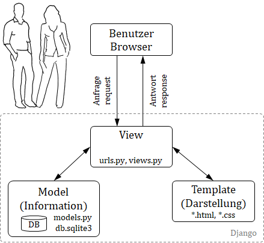
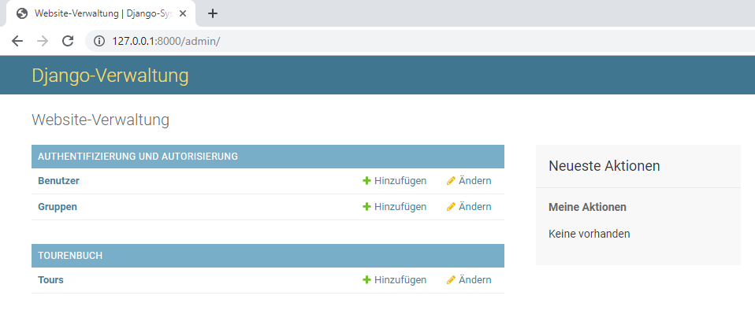
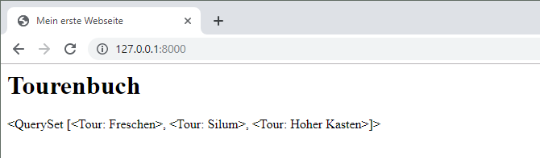
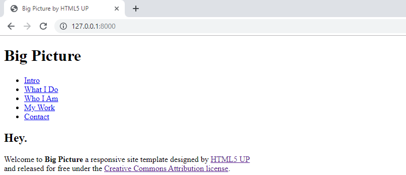

Visualisierung
Um entscheiden oder handeln zu können sind Infomationen notwendig. Z.B. Energiemonitoring um die Effizenz zu beurteilen oder ein Niederschlagradar um eine geeignete Tourenwahl zu treffen. Werden Berechnungen oder Modellierungen ausgeführt so helfen diese Informationen ebenfalls Entscheidungen zu fällen. Im Ingenieurwesen ist dies in der Regel ein Diagramm. In den beiden Tutorial auf www.pv4ing.ch sind die für uns relevanten Diagramme dargestellt. Zusätzlich sollte bei einer Visualisierung noch ein erklärender Text hinzu, nicht zu viel aber ein bisschen macht Sinn.
Denken wir an Energiemonitoring, so sollte die Visualisierung günstig sein, d.h. kein zusätzlicher Bildschirm und PC um den Zählerstand darzustellen. Das günstigste Display ist dies welches wir bereits dabei haben, das Mobil oder ein PC.
Deshalb bauen wir nicht ein eigenes GUI (Graphical User Interface), sondern erstellen eine Webpage. Auf der Messeinheit läuft ein Server, welcher die Information als Webpage darstellt und durch ein Mobil oder PC "angesurft" wird, welches die Informationen als Webpage über einen Browser darstellt.
Dabei ist neben der eigentlichen Information die Darstellung der Webpage wichtig um eine gute Lesbarkeit auf unterschiedlichen Geräten (PC, Notebook, Smartphone) zu erreichen. Dies wird als Responsiv Design bezeichnet.

Leistsatz
Das Bauen einer Website kann zu einer sehr aufwändigen Sache werden, vorallem wenn wir uns in der Gestaltung verlieren. Deshalb einige Leitsätze:
Konzentration aufdas s Wesentliche: Was ist die Kernaussage der Webpage? Desgin wird "zugekauft"
Effektiv
Für jeden Handgriff das richtige Werkzeug
Der erste Punkt hat nicht mit programmieren oder Webpage zu tun. Hierfür nimmt man Papier und Bleistift um die Kernaussage zu skizziern.
Bei zweiten Punkt "Effektiv" geht es daraum in kurzer Zeit eine Webpage zu erstellen. dies heisst Einfachheit im Aufbau mit wenig Code. Dies wird durch Python unterstützt da Python selbst dieses Ziel verfolgt beschrieben als "The Zen of Python":
Beautiful is better than ugly.
Explicit (ausdrücklich) is better than implicit (indirekt).
Simple is better than complex.
Complex is better than complicated.
Flat is better than nested (verschachtelt).
Es gibt noch weitere Punkte, gib auf der Python Konsole folgendes ein:
import this
Der dritte Punkt "die richtigen Werkzeuge" zu verwendet unterstützt ein effektives arbeit. Das heisst auch das wir nicht das Selbe zweimal machen. Ein geschriebener Code sollte mehrmals für unterschiedliche Webpages einsetzbar sein. Dieses Prinzpip wird als "Don't repeat yourself (DRY)" bezeichnet.
Webframework
Zur Erstellung von Webpages wird deshalb ein Webframework verwendet. Dies ist ein Baukastensystem mit einer Vielzahl nützlicher Werkzeuge wie Benutzerverwaltung, Formulare, Upload von Dateien und voralllem ein integrierter Entwicklungsserver um die Webpage schnell und einfach darzustellen ohne dem Aufsetzten eines Servers.
Der erste Schritt hierzu ist die Auftrennung von Information und der Darstellung, wodurch beide Blöcke wiederverwendbar sind. Selbe Darstellung mit anderen Informationen oder selbe Informationen bei unterschiedlichen Darstellungen.

Als Webframework verwenden wir Djano basierend auf Python. Dies Framework wird bei hunderten Webpages eingesetzt wie Youtube, Dropbox, Google, Netflix, Spotify, Pinterest, NASA, uvm. Der Untertitel von Django heisst "The web framework for perfectionists with deadlines" und zeigt die Stärken von Django, wie:
Schnell umsetzbar mit wenig Code
Sicherheit inbegriffen
Skalierbar
Vielfach erprobt und bewährt
Djanog ist benannt nach dem Gitaristen Django Reinhardt.

Architektur Django
Die Architektur von Django teilt die Darstellung (Template) von den Informationen (Model), welche, je nach Anfrage (request) unterschiedlich zusammengebaut (View) werden. Das Konzept wird als MTV bezeichnet für Model, Template, View und ist eine lose gekoppelte Struktur, sodass einzelne Teile wiederverwendet werden können.

View
Die View ist die Programmeinheit bei Django, welche die Webpage zusammenbaut und darstellt, deshalb view. Hier werden auch die Anfragen (request) behandelt und die Adresse geprüft.
In der allgemeinen Literatur wird das MTV-Modell häufiger als MVC-Modell verwedet für Model, View, Control. Hier entspricht View dem DjangoTemplate und Control der Django View.
Template
Das Template beinhaltet die Darstellung, das Design der Webpage. Dieses Template werden wir nicht bauen, sondern fertig beziehen. Eine Quelle ist www.html5up.net.
Model
Unter Model werden die Informationen verstanden. Diese werden als Daten in einer Datenbank abgelegt. Um auf die Daten zugreifen zu können sind Datenbankabfragen wie SQL notwendig, diese sind jedoch nicht einfach und Django soll einfach sein. Deshalb wird die Information als Model definiert um so auf die Daten zugreifen zu können unabhängig der Datenbankstruktur im Hintergrund.
Die Modellierung erfolgt über Objekte.
Was sind Objekte?
Ein Objekt ist eine Sammlung von Eigenschaften und Aktionsmöglichkeiten (Funktionen/Methoden), das anhand einer Vorlage (Klasse) erstellt wird. Das klingt erst einmal komisch, aber hier haben wir gleich ein Beispiel.
Wenn wir zum Beispiel ein Fahrrad modellieren wollen, erschaffen wir eine Objektvorlage Fahrrad, eine Art Blaupause oder Schema, nach welcher zukünftig jedes spezifische Fahrradobjekt erstellt werden kann. Die Vorlage beschreibt typische Eigenschaften von einem Fahrrad, z.B. farbe, typ (z.b. Tourenrad, Mountainbike, Rennrad) und anzahlService welches die gemachten Service mitzählt.
Jedes Objekt der Vorlage Fahrrad soll natürlich auch einige Aktionsmöglichkeiten besitzen: servicegemacht. Dies sieht dann so aus:
Fahrrad
--------
farbe
typ
anzahlService
servicegemacht()
In Pythonschreibt man wie folgt:
class Fahrrad:
farbe = 'gelb'
typ = 'rennrad'
anzahlService = 0
def servicegemacht(self):
self.anzahlService = self.anzahlService + 1
Mit diesem Code hast du eine Vorlage definiert. Nun erzeugst du ein Objekt velo.
velo = Fahrrad()
Die Eigenschaften von velo kann du abfragen indem du velo.anzahlServiceeingibst. Wenn du nun einen Service gemacht hast, d.h. die Funktion aufgerufen hast (velo.servicegemacht()), so erhöht sich die anzahlService. Probiere es aus.
Was jedoch nicht schön ist, dass alle Objekte welche wir nun erzeugen die gleiche Farbe und den gleichen Fahrradtyp enthalten. Dies ändern wir nun:
class Fahrrad:
def __init__(self, neueFarbe, neuerTyp):
self.farbe = neueFarbe
self.typ = neuerTyp
self.anzahlService = 0
def servicegemacht(self):
self.anzahlService = self.anzahlService + 1
Nun können wir unterschiedliche Fahrräder von der Vorlage erzeugen. Die Frage und den Fahrradtyp definieren wir, wenn wir ein neues Objekt erzeugen.
velo = Fahrrad('grün', 'Tourenrad')
Dabei müssen wir die Methode _init_ nicht explizit aufrufen, sondern einfach die Werte in Klammern übergeben, wenn das Objekt erzeugt wird, basierend der Vorlage.
Einrichten der Werkstatt
Zum Leitsatz 3 "Für jeden Handgriff das richtige Werkzeug" richten uns zuerst eine Arbeitsumgebung, ein virtual enviroment ein. Dies legt ein Ordner an indem unsere Python, Django, Bokeh Programme mit definierter Verion abgelegt sind. Sollten wir auf dem PC später mal ein Update durchführen, so bleibt unser Projekt trotzdem auf dem Versionsstand auf dem wir es gebaut haben.
Dies ist jetzt ein Mehraufwand, genau jetzt wo so viel Neues auf uns zukommt, aber es macht sich bezahlt. Wenn du später auf ein Projekt zurückgreifen möchtst haben sich die Versionen weiterentwickelt und der ürspüngliche Projekt-Code läuft nicht mehr, was nicht nur ärgerlich, sondern sehr zeitaufwändig ist. Deshalb "frieren" wir den aktuelle Stand der Entwicklungsumgebung ein.
Wir erstellen zuerst unser Projektverzeichnis djangoProjekt. In diesem Verzeichnis erstellen wir eine virtuelle Umgebung namens myvenv. Im Anaconda-Paket ist die notwendige Software 'venv 'enthalten. Wir starten Python und weisen dieses an (mit -m) das die Software 'venv' ausgeführt werden soll:
python -m venv myvenv
Nun starten wir die virtuelle Umgebung in unserem Projektverzeichnis mit
D:\djangoProjekt> myvenv\Scripts\activate
Damit die verwendeten Versionen der auf dem gewünschten Stand sind und dieser dokumentiert ist, erstellen wir eine neue Textdatei swpakete.txt. Darin listen wir die SW-Pakete mit den Versionen:
pip Django==2.2.1 bokeh==1.3.4
Nun aktualisieren:
pip install -r swpakete.txt
Nun sind wir eingerichtet. Mit pip list kannst du die aktuell, installierten Versionen ansehen.
1. Projekt anlegen
Die Funktionsweise von Django erklären wir indem wir ein Tourenbuch erstellen, als Webpage! Für die Webpage legen wir zuerst ein Ordner bzw. ein Projekt an. Anschliessend definieren wir, wie die Anfragen, d.h. die URLs behandelt werden und dann die Webpage als View generiert wird. Zuvor benötigen wir aber Informationen, welche als Modelle definiert werden. Hier unterstützt uns Django-Administration. Am Ende kümmern wir uns dann um die Darstellung. Wir führen 8 Schritte durch:
Projekt anlegen
Modelle
Django-Administration
URLs
Views
Datenbankabfrage
Dynamische Daten in Templates
Darstellung
Die ersten 7 Kapitel basieren auf dem Tutorial Djangogirls lizenziert unter Creative Commons Attribution-ShareAlike 4.0 International License.
Der erste Schritt ist, ein neues Django-Projekt zu starten. Im Grunde bedeutet das, dass wir einige Skripte ausführen werden, die Django zur Verfügung stellt, um ein Skelett eines Django-Projekts für uns zu erzeugen. Das Projekt beinhaltet einen Haufen von Verzeichnissen und Dateien, die wir später verwenden werden.
Die Namen einiger Dateien und Verzeichnisse sind sehr wichtig für Django, da sich Django durch die Verzeichnisnamen und Dateinamen orientiert. Wir nennen unserer Seite mysite (können diese beliebig bezeichnen).
(myvenv) ~/djangoProjekt> django-admin startproject mysite .
Der Punkt . ist sehr wichtig, weil er dem Skript mitteilt, dass Django in deinem aktuellen Verzeichnis installiert werden soll. (Der Punkt . ist eine Schnellreferenz dafür.)
django-admin.py ist ein Skript, welches Verzeichnisse und Dateien für dich erstellt. Du solltest jetzt eine Verzeichnisstruktur haben, die folgendermaßen aussieht:
djangoProjekt
├───manage.py
├───mysite
│ settings.py
│ urls.py
│ wsgi.py
│ __init__.py
├───myvenv
└───swpakete.txt
manage.py ist ein Script, das das Management deines Projektes unterstützt. Mit dem Script bist du unter anderem in der Lage, den Webserver auf deinem Rechner zu starten, ohne etwas Weiteres installieren zu müssen.
Die Datei settings.py beinhaltet die Konfiguration deiner Website.
Die urls.py Datei ist die Datei welche die einkommenden Anfragen (request) überprüft.
Lass uns kurz die anderen Dateien vergessen - wir werden sie nicht verändern. Denk aber dran, sie nicht versehentlich zu löschen!
Der myvenv-Ordner und die swpakete.txt-Datei kommen von der virtuellen Umgebung, nicht von Django.
Einstellungen anpassen
Wir machen nun ein paar Änderungen in mysite/settings.py. Öffne die Datei mit dem Code-Editor, den du schon installiert hast.
Es wäre schön, wenn die richtige Zeit auf deiner Webseite eingestellt ist. Gehe zur Zeitzonen-Liste auf Wikipedia und kopiere die für dich geltende Zeitzone (Spalte "TZ"), z.B. Europe/Zurich.
Suche in settings.py die Zeile, die TIME_ZONE enthält und ändere sie ab, um deine eigene Zeitzone auszuwählen. Zum Beispiel:
TIME_ZONE = 'Europe/Zurich'
Ein Sprachkennung besteht aus einem Kürzel für die Sprache, z.B. en für Englisch oder de für Deutsch, und einem Länder-Kürzel z.B. ch für die Schweiz. Falls Englisch nicht deine Muttersprache ist, kannst du damit die Standard-Knöpfe und -Meldungen von Django auf deine Sprache wechseln. Der "Cancel"-Knopf würde dann in diese Sprache übersetzt (und z.B. bei Deutsch mit "Abbrechen" beschriftet). Django enthält viele fix-fertige Übsersetzungen.
Wenn du eine andere Sprache als Englisch willst, ändere die Sprachkennung, indem du die folgende Zeile änderst:
LANGUAGE_CODE = 'de-ch'
Ausserdem müssen wir einen Pfad für statische Dateien festlegen. (Über statische Dateien und CSS lernst du später in diesem Tutorial etwas.) Geh hinunter zum Ende der Datei und füge direkt unter dem STATIC_URL-Eintrag einen neuen Eintrag namens STATIC_ROOT ein:
STATIC_URL = '/static/'
STATIC_ROOT = os.path.join(BASE_DIR, 'static')
Wenn DEBUG auf True gesetzt ist und ALLOWED_HOSTS leer, dann wird der "Host" gegen ['localhost', '127.0.0.1', '[::1]'] validiert. Falls die Seite später im Internet läuft ist hier der Hostname (z.B. .meineSeite.ch) anzugeben.
ALLOWED_HOSTS = ['127.0.0.1', '.meineSeite.ch']
Eine Datenbank erstellen
Es gibt viele verschiedene Datenbank Programme, welche die Daten unserer Website verwalten können. Wir werden die Standard-Datenbanksoftware nehmen, sqlite3.
Das sollte schon in der mysite/settings.py-Datei eingestellt sein:
DATABASES = {
'default': {
'ENGINE': 'django.db.backends.sqlite3',
'NAME': os.path.join(BASE_DIR, 'db.sqlite3'),
}
}
Um eine Datenbank für unseren Blog zu erstellen, müssen wir folgenden Befehl in der Konsole ausführen (Dazu müssen wir in dem djangoProjekt-Verzeichnis sein, in dem sich auch die manage.py-Datei befindet). Wenn alles glatt läuft, sollte das so aussehen:
(myvenv) ~/djangoProjekt$ python manage.py migrate
Operations to perform:
Apply all migrations: auth, admin, contenttypes, sessions
Running migrations:
Rendering model states... DONE
Applying contenttypes.0001_initial... OK
Applying auth.0001_initial... OK
Applying admin.0001_initial... OK
Applying admin.0002_logentry_remove_auto_add... OK
Applying contenttypes.0002_remove_content_type_name... OK
Applying auth.0002_alter_permission_name_max_length... OK
Applying auth.0003_alter_user_email_max_length... OK
Applying auth.0004_alter_user_username_opts... OK
Applying auth.0005_alter_user_last_login_null... OK
Applying auth.0006_require_contenttypes_0002... OK
Applying auth.0007_alter_validators_add_error_messages... OK
Applying auth.0008_alter_user_username_max_length... OK
Applying auth.0009_alter_user_last_name_max_length... OK
Applying sessions.0001_initial... OK
Und wir sind fertig! Zeit, unseren Webserver zu starten, um zu sehen, ob unsere Website funktioniert!
Den Webserver starten
Kontrolliere, dass du in dem Verzeichnis bist, in dem die manage.py-Datei liegt (das djangoProjekt-Verzeichnis). Wir starten den Webserver, indem wir in der Konsole python manage.py runserver ausführen:
(myvenv) ~/djangoProjekt$ python manage.py runserver
Jetzt wollen wir schauen, ob unsere Website funktioniert: Öffne deinen Browser (Firefox, Chrome, Safari, Edge oder was du sonst nutzt) und gib diese Adresse ein:
http://127.0.0.1:8000/
Glückwunsch! Du hast gerade deine erste Website erstellt und sie auf deinem Webserver laufen! Ist das nicht toll?

Beachte, dass ein Terminalfenster immer nur eine Sache zur selben Zeit erledigen kann, und in dem Terminalfenster, was du vorhin geöffnet hast, läuft gerade der Webserver. Und solange der Webserver läuft und auf einkommende Anfragen wartet, akzeptiert das Terminal zwar Texteingaben, aber es wird keine neuen Befehle ausführen.
2. Modelle
Wir erstellen jetzt etwas, damit wir alle Tours von unserem Tourenbuch speichern können. Dies machen wir mit Objekten. Ein Objekt besteht aus Eigenschaften und Aktionsmöglichkeiten (genannt Methoden) .Wir müssen folgende Fragen beantworten: Welche Eigenschaften sollte er haben? Titel, Beschreibungstext, zurückgelegte Distanz und Aufstiegs- und Abstiegshöhe, sowie die Dauer für die Tour. Weiter der Zeitpunkt wann der Eintag veröffentlicht wurde. Dies sind Objekteigenschaften. Wir nennen das Objekt Tour, gross geschrieben wie bei Objekten üblich.
Tour
--------
titel
text
distanz
aufstieg
abstieg
dauer
sichtbarSeit
Was für Dinge könnte man mit dem Toureneintrag machen? Es wäre schön, wenn wir eine Methode hätten, die den Tour zu veröffentlicht. Wir brauchen also eine veroffentlichen-Methode.
Da wir jetzt wissen, was wir erreichen wollen, können wir nun damit anfangen, es in Django zu formulieren!
Ein Django-Model erstellen
Wir erstellen ein Django-Model, eine Vorlage. Mit dieser werden zukünftig einzelne Touren-Einträge bzw. Tourobjekte erstellt.
Ein "Modell" ist in Django ein Objekt einer speziellen Sorte – eines das in der Datenbank gespeichert wird. Eine Datenbank ist eine Sammlung von Daten. Dies ist ein Ort, an dem du Informationen zu Benutzern, deinen Toureneinträge usw. speichern wirst. Wir benutzen dafür eine SQLite-Datenbank. Das ist die Voreinstellung in Django – für uns wird das erst einmal ausreichen.
Du kannst dir ein Model wie eine Tabelle mit Spalten ("Feldern", englisch "fields") und Zeilen (Datensätzen) vorstellen.
Eine Applikation für unser Tourenbuch
Um unsere Webseite aufgeräumt zu halten, werden wir eine eigene Anwendung für unser Projekt erstellen, wir nennen das eine Applikation. Wir wollen uns gleich daran gewöhnen, alles ordentlich und sortiert zu halten. Um eine Applikation zu erstellen, müssen wir das folgende Kommando in der Konsole ausführen (wieder in dem djangoProjekt-Verzeichnis, in dem die manage.py-Datei liegt):
(myvenv) ~/djangoProjekt$ python manage.py startapp tourenbuch
Wie du sehen kannst, wurde ein neues tourenbuch-Verzeichnis erstellt, welches schon einige Dateien enthält. Das Verzeichnis und die Dateien unseres Projektes sollten jetzt so aussehen:
djangoProjekt
├── tourenbuch
│ ├── __init__.py
│ ├── admin.py
│ ├── apps.py
│ ├── migrations
│ │ └── __init__.py
│ ├── models.py
│ ├── tests.py
| ├── urls.py
│ └── views.py
├── db.sqlite3
├── manage.py
├── mysite
│ ├── __init__.py
│ ├── settings.py
│ ├── urls.py
│ └── wsgi.py
├───myvenv
└───swpakete.txt
Nach dem Erstellen der Applikation müssen wir Django noch sagen, dass diese auch genutzt werden soll. Das tun wir in der Datei mysite/settings.py -- öffne diese in deinem Code-Editor. Wir suchen den Eintrag INSTALLED_APPS und fügen darin die Zeile 'tourenbuch.apps.TourenbuchConfig', (Name durch die zuvor definierte app gegeben) direkt über der schließenden Klammer ] ein. Danach sollte es also so aussehen:
INSTALLED_APPS = [
'django.contrib.admin',
'django.contrib.auth',
'django.contrib.contenttypes',
'django.contrib.sessions',
'django.contrib.messages',
'django.contrib.staticfiles',
'tourenbuch.apps.TourenbuchConfig',
]
Das Tour-Model
Alle Models unserer Applikation werden in der tourenbuch/models.py-Datei definiert. Dies ist also der richtige Platz für unser Tour-Model.
Öffnen wir also tourenbuch/models.py im Code-Editor, löschen alles darin und schreiben Code wie diesen:
from django.conf import settings
from django.db import models
from django.utils import timezone
class Tour(models.Model):
titel = models.CharField(max_length=200)
text = models.TextField()
distanz = models.FloatField() # [km]
aufstieg = models.FloatField() # [m]
abstieg = models.FloatField() # [m]
dauer = models.FloatField() # [h] Stunden als Dezimalzahl
sichtbarSeit = models.DateTimeField(blank=True, null=True)
def veroffentlichen(self):
self.sichtbarSeit = timezone.now()
self.save()
def __str__(self):
return self.titel
Kontrolliere nochmal, dass du zwei Unterstriche (__) vor und hinter dem str gesetzt hast. Diese Konvention wird häufig in Python benutzt und manchmal nennen wir es "dunder" (kurz für "double-underscore").
Es sieht kompliziert aus, oder? Aber keine Sorge, wir werden erklären, was diese Zeilen bedeuten!
Die Zeilen, die mit from oder import beginnen, sind Anweisungen, um Sachen aus anderen Dateien mitzunutzen. Anstatt häufig genutzten Code in jede Datei einzeln zu kopieren, binden wir ihn ein mit: from... import ....
class Tour(models.Model): – Diese Zeile definiert unser Model (eine Objekt-Vorlage).
classist ein spezielles Schlüsselwort, das angibt, dass wir hier eine Klasse, eine Vorlage für zukünftige Objekte, definieren wollen.Tourist der Name unseres Models. Wir können ihm auch einen anderen Namen geben (aber wir müssen Sonderzeichen und Leerzeichen vermeiden). Beginne einen Klassennamen immer mit einem Großbuchstaben.models.Modelgibt an, dass das Tour-Model ein Django-Model ist, so weiß Django, dass es in der Datenbank gespeichert werden soll.
Jetzt definieren wir die Eigenschaften, über welche wir gesprochen haben: titel, text, distanz, aufsteig, abstieg, dauer und sichtbarSeit. Um dies zu tun, müssen wir den Typ jedes Felds definieren. (Ist es Text? Eine Zahl? Ein Datum?)
models.CharField– so definierst du ein Textfeld mit einer limitierten Anzahl von Zeichen.models.TextField– so definierst du ein langes Textfeld ohne Grössenbeschränkung. Klingt doch perfekt für unsere Blogpostinhalte, oder?models.DateTimeField– ein Feld für einen Zeitpunkt (ein Datum und eine Uhrzeit).models.FloatField– definiert ein Zahlenfeld.
Was ist mit def veroffentlichen(self):? Das ist genau die veroffentlichen-Methode zum Veröffentlichen unseres Toureneintrags. def zeigt an, dass es sich nachfolgend um eine Funktion/Methode handelt, und veroeffentlichen ist der Name der Methode. Du kannst den Namen der Methode auch ändern, wenn du möchtest. Die Benennungsregel ist, dass wir Kleinbuchstaben verwenden, und anstatt Leerzeichen (die in Funktionsnamen nicht vorkommend dürfen) Unterstriche. Eine Methode, die einen Durchschnittspreis berechnet, könnte zum Beispiel calculate_average_price genannt werden.
Oft geben Methoden einen Wert zurück (englisch: return). Ein Beispiel dafür ist die Methode __str__. In diesem Szenario, wenn wir __str__() aufrufen, bekommen wir einen durch uns definierten Text (string) zurück, anstatt schwerverständlichen Code.
Beachte, dass sowohl def veroeffentlichen(self): als auch def __str__(self): in unserer Klasse eingerückt sind. Mit der Einrückung sagen wir Python, dass diese Methoden Teil der Klasse sind. Ohne die Einrückung wären es für Python Funktionen ausserhalb der Klasse, was zu anderem Verhalten führen würde.
Tabellen für Models in deiner Datenbank erstellen
Als letzten Schritt wollen wir unser neues Model der Datenbank hinzufügen. Dazu müssen wir Django erst 'mal mitteilen, dass wir einige Änderungen an unserem Model vorgenommen haben. Das sieht dann so aus:
(myvenv) ~/djangoProjekt$ python manage.py makemigrations tourenbuch
Migrations for 'tourenbuch':
journal/migrations/0001_initial.py:
- Create model Tour
Hinweis: Denke daran, die Dateien nach dem Editieren zu speichern. Ansonsten führt dein Computer die vorherige Version aus, was zu unerwarteten Fehlermeldungen führen kann.
Django hat eine Migrationsdatei für uns vorbereitet, die wir nun auf unsere Datenbank anwenden müssen. Führ folgendes aus:
(myvenv) ~/djangoProjekt$ python manage.py migrate tourenbuch
Operations to perform:
Apply all migrations: tourenbuch
Running migrations:
Applying tourenbuch.0001_initial... OK
Hurra! Unser Tour-Model ist ab sofort in unserer Datenbank gespeichert! Sehe wir es uns an...
3. Django-Administration
Wir benutzen den Django-Admin, um die soeben modellierten Tours hinzuzufügen, zu ändern oder zu löschen.
Öffne die Datei tourenbuch/admin.py im Code-Editor und ersetze den Inhalt wie folgt:
from django.contrib import admin
from .models import Tour
admin.site.register(Tour)
Wie du siehst, importieren wir hier das Model "Tour", das wir im vorherigen Kapitel erstellt haben. Damit unser Model auf der Admin-Seite sichtbar wird, müssen wir es mit admin.site.register(Tour) registrieren.
Okay, wir sehen uns nun unser Tour-Model an. Denk daran, python manage.py runserver in die Konsole einzugeben, um den Webserver zu starten. Öffne deinen Browser und gib die Adresse http://127.0.0.1:8000/admin/ ein. Du siehst eine Anmeldeseite:

Um dich einloggen zu können, musst du zunächst einen superuser erstellen - einen User, der alles auf der Website steuern darf. Geh zurück zur Kommandozeile, tippe python manage.py createsuperuser und drücke Enter.
Denke daran, damit du neue Kommandos eingeben kannst während der Webserver läuft, musst du ein neues Terminal öffnen und deine virtualenv aktivieren.
Wenn du dazu aufgefordert wirst, gib einen Benutzernamen (Kleinbuchstaben, keine Leerzeichen), eine Mailadresse und ein Passwort ein. Die Passwort-Eingabe ist nicht sichtbar. Beispiel user: guide; e-mail: guide@test.ch; pwd: esgehthinauf.
Geh nochmal in deinen Browser und log dich mit den Daten des Superusers ein, den du gerade erstellt hast. Du solltest nun das Django-Admin-Dashboard sehen.

Gehe auf Tours und experimentiere ein bisschen damit. Füge z.B. zwei Toureneinträge hinzu. Mach dir keine Sorgen wegen des Inhalts -- der ist nur auf deinem lokalen Computer sichtbar.
Achte darauf, dass bei einem kein Veröffentlichungsdatum eingetragen ist. Das werden wir später noch brauchen.

Mehr zum Django-Admin-Dashboard kannst du in der Django-Dokumentation erfahren: https://docs.djangoproject.com/en/2.2/ref/contrib/admin/
Drei der acht Schritte haben wir. Jetzt ist wahrscheinlich ein guter Moment, um dir einen Kaffee (oder Tee) zu gönnen und neue Kraft zu tanken. Du hast dein erstes Django-Model erstellt - du hast dir eine kleine Pause verdient!
4. URLs
Gleich werden wir unsere erste Website basteln: eine Homepage als Tour! Zuerst sollten wir uns jedoch mit Django URLs beschäftigen.
Was ist eine URL?
Eine URL ist eine Web-Adresse. Jedes Mal, wenn du eine Website besuchst, kannst du eine URL sehen - sie ist in der Adressleiste des Browsers sichtbar. (Ja! 127.0.0.1:8000 ist eine URL! Und http://www.pv4ing.ch ist auch eine URL.)

Jede Seite im Internet braucht ihre eigene URL. Dadurch weiß deine Applikation, was sie dem Nutzer, der eine URL öffnet, zeigen soll. In Django verwenden wir eine sogenannte URLconf (URL-Konfiguration). URLconf ist eine Ansammlung von Mustern, die Django mit der empfangenen URL abgleicht, um die richtige View zu finden, das heißt, um letztlich die richtige Seite für den Nutzer anzuzeigen.
Wie funktionieren URLs in Django?
Öffne die mysite/urls.py-Datei in deinem Code-Editor nach Wahl und schaue dir an, wie sie aussieht:
"""mysite URL Configuration
[...]
"""
from django.contrib import admin
from django.urls import path
urlpatterns = [
path('admin/', admin.site.urls),
]
Wie du siehst, hat Django hier schon etwas für uns eingefügt.
Zeilen zwischen dreifachen Gänsefüßchen (''' oder """) heißen Docstrings (Kommentare) - man kann sie am Anfang der Datei, Klasse oder Methode platzieren, um zu beschreiben, was sie tut. Sie werden von Python nicht ausgeführt.
Die admin-URL, die du im vorangegangenen Kapitel bereits besucht hast, ist schon da:
path('admin/', admin.site.urls),
Diese Zeile bedeutet, dass Django für jede URL, die mit admin/ beginnt, die entsprechende View finden wird. Hier wird mit admin-site.urls eine ganze Sammlung von admin-URLs referenziert. Dadurch müssen nicht alle in dieser kleinen Datei aufgeführt werden und sie bleibt lesbarer und übersichtlicher.
Deine erste Django-URL!
Es wird Zeit, unsere erste URL zu erstellen! Wir wollen, dass 'http://127.0.0.1:8000/' die Homepage unseres Blogs wird und eine Liste unserer Tours zeigt.
Wir wollen auch, dass die mysite/urls.py-Datei sauber bleibt. Deshalb importieren wir die URLs unserer tourenbuch-Applikation in die mysite/urls.py-Hauptdatei.
Also los: Füge eine Zeile hinzu, die tourenbuch.urls importiert. Ausserdem wirst du die Zeile from django.urls… ändern müssen, da wir hier die Funktion include verwenden, die du in dieser Zeile noch importieren musst.
Deine mysite/urls.py-Datei sollte jetzt so aussehen:
from django.contrib import admin
from django.urls import path, include
urlpatterns = [
path('admin/', admin.site.urls),
path('', include('tourenbuch.urls')),
]
Django wird nun alle Aufrufe von 'http://127.0.0.1:8000/' auf tourenbuch.urls umleiten und dort nach weiteren Anweisungen schauen.
tourenbuch.urls
Erstelle eine neue leere Datei namens urls.py im Verzeichnis tourenbuch und öffne sie im Code-Editor. Alles klar! Füge folgende zwei Zeilen ein:
from django.urls import path
from . import views
Hier importieren wir die Django-Funktion path und alle unsere views aus unserer tourenbuch-Applikation. (Wir haben noch keine, aber dazu kommen wir gleich!)
Jetzt können wir unser erstes URL-Muster hinzufügen:
urlpatterns = [
path('', views.tbuch, name='buch'),
]
Wie du siehst, fügen wir nun eine view mit dem Namen tbuch zur Root-URL hinzu. Leere Zeichenfolgen passen auf dieses Muster und der Django-URL-Resolver ignoriert den Domain-Namen (z.B. http://127.0.0.1:8000/), der im vollständigen Pfad voransteht. Dieses Muster sagt Django also, dass views.tbuch das gewünschte Ziel ist, wenn jemand deine Website über 'http://127.0.0.1:8000/' aufruft.
Der letzte Teil name='buch' ist der Name der URL, der genutzt wird, um die View zu identifizieren. Er kann identisch mit dem Namen der View sein, aber es kann auch ein komplett anderer sein. Wir werden später die Namen der URLs im Projekt benutzen. Daher ist es wichtig, jede URL in der App zu benennen. Wir sollten außerdem versuchen, eindeutige und einfach zu merkende URL-Namen zu wählen.
5. Views
In der View schreiben wir die Logik unserer Anwendung. So werden Informationen aus dem Model abgefragt werden, welches du zuvor erzeugt hast und diese werden an ein Template weitergeben. Ein Template erzeugen wir im nächsten Kapitel. Views sind Python-Funktionen in der views.py Datei. Wir fügen nun also unsere Views zur Datei tourenbuch/views.py hinzu.
tourenbuch/views.py
OK, wir öffnen jetzt diese Datei in unserem Code-Editor und schauen, was darin steht:
from django.shortcuts import render
# Create your views here.
OK, hier steht noch nicht so viel.
Denk daran, Zeilen mit einem # am Anfang sind Kommentare – das bedeutet, dass diese Zeilen von Python nicht ausgeführt werden.
Lass uns eine View erstellen, wie der Kommentar das vorschlägt. Füge die folgende Mini-View unter dem Kommentar ein:
def tbuch(request):
return render(request, 'tourenbuch/home.html', {})
Wie du siehst, definieren wir eine Funktion (def) mit dem Namen tbuch, die den Parameter request entgegen nimmt und die mit return den Rückgabewert einer anderen Funktion namens render zurück gibt. Letztere wird unser Template tourenbuch/home.html "rendern" (zu einer fertigen HTML-Seite zusammensetzen).
Die Webseite funktioniert noch nicht da wir das Template, die Vorlage home.html noch nicht erstellt haben.
Dein erstes Template!
Ein Template zu erstellen, heißt, eine entsprechende Datei dafür zu erstellen. Alles ist eine Datei, wie du vielleicht schon bemerkt hast.
Templates werden im Verzeichnis tourenbuch/templates/tourenbuch gespeichert. Als Erstes erzeugen wir das Verzeichnis templates in deinem Blog-Verzeichnis. Im Template-Verzeichnis selbst erstellen wir ein weiteres Verzeichnis tourenbuch:
tourenbuch
└───templates
└───tourenbuch
(Falls du dich wunderst, warum wir zwei tourenbuch-Verzeichnisse brauchen – das hängt mit den nützlichen Namenskonventionen von Django zusammen, die das Leben einfacher machen, wenn deine Projekte immer komplizierter und komplexer werden und Django orientiert sich an der Ordnerstruktur.)
Als nächstes erstellen wir eine Datei home.html (erst mal ohne Inhalt) innerhalb des Verzeichnisses tourenbuch/templates/tourenbuch.
Öffne die neue Datei im Code-Editor, und Kopiere folgendes in die Datei:
<html>
<head>
<title>Mein erste Webseite</title>
</head>
<body>
<div>
<h1>Tourenbuch</h1>
</div>
<div>
<h2>Erster Eintrag</h2>
<p>Irgend ein Text.</p>
</div>
</body>
</html>
Yaaay! Bis jetzt zeigt unser Template aber immer genau die gleichen Inhalte – obwohl wir aber vorhin davon gesprochen haben, dass Templates uns erlauben, verschiedene Informationen im gleichen Format darzustellen.
Eigentlich wollen wir richtige Tours anzeigen, die in unserer Django-Admin-Oberfläche hinzugefügt wurden – und das wollen wir als Nächstes tun.
6. Datenbankabfrage
In diesem Kapitel lernst du, wie sich Django mit der Datenbank verbindet und Daten darin speichert. Lass uns loslegen!
Was ist ein QuerySet?
Zusammengefasst ist ein QuerySet eine Liste von Objekten eines bestimmten Models. QuerySets erlauben es dir, Daten aus der Datenbank zu lesen, zu filtern und zu sortieren.
Am besten wir sehen uns das an einem Beispiel an. Versuchen wir's?
Django-Shell
Öffne deine lokale Konsole (nicht in PythonAnywhere) und tippe dieses Kommando ein:
(myvenv) ~/djangoProjekt$ python manage.py shell
Das sollte angezeigt werden:
(InteractiveConsole) >>>
Nun bist du in der interaktiven Konsole von Django. Die funktioniert wie der Python-Prompt, aber hat noch etwas zusätzliche Django-Magie. :) Du kannst hier auch alle Python-Befehle verwenden.
Alle Objekte
Zunächst wollen wir alle unsere Blogposts ansehen. Das kannst du mit folgendem Kommando erreichen:
>>> Tour.objects.all()
Traceback (most recent call last):
File "<console>", line 1, in <module>
NameError: name 'Tour' is not defined
Hoppla! Eine Fehlermeldung ist erschienen. Sie sagt uns, dass Python "Tour" nicht kennt. Und sie hat recht: Wir haben vergessen zu importieren!
>>> from tourenbuch.models import Tour
Wir importieren das Model Tour aus tourenbuch.models. Versuchen wir nochmal, alle Tours anzuzeigen:
>>> Tour.objects.all()
<QuerySet [<Tour: Hoher Kasten>, <Tour: Lindauer Hütte>]>
Das ist eine Liste all der Touren, die wir zuvor lokal erstellt haben! Wir haben diese Touren mit der Django-Admin-Oberfläche erstellt. Aber nun wollen wir weitere Touren mit Python erstellen! Wie geht das also?
Objekt erstellen
So erstellst du ein neues Tour-Objekt in der Datenbank:
>>> Tour.objects.create(titel = 'Freschen', text = 'ab Schilift Laterns', distanz = 8 , abstieg = 1900, aufstieg = 1900, dauer = 4)
<Tour: Freschen>
Super! Wollen wir nachsehen, ob es funktioniert hat?
>>> Tour.objects.all()
Da ist sie, ein weitere Tour in der Liste! Du kann jetzt nach Belieben weitere Touren hinzufügen, um ein Gefühl dafür zu bekommen, wie es funktioniert.
Objekte filtern
Eine wichtige Eigenschaft von QuerySets ist, dass die Einträge gefiltert werden können. Zum Beispiel wollen wir alle Tours finden, die einen Aufstieg von mehr als 1000 m haben. Dafür nehmen wir filter statt all in Tour.objects.all(). In Klammern schreiben wir die Bedingung(en), die eine Tour erfüllen muss, damit ein er in unser Queryset kommt. So soll jetzt der aufstieg grösser als 1000 m herausgefiltert werden. In Django schreiben wir deshalb: aufstieg__gt. gt für greater than, lt für less than, gte für greater equal than. Weitere Filtereigenschaften sind in der Djangodoku beschrieben unter Django-QuerySet-API reference.
Jetzt sieht unser Code folgendermaßen aus:
>>> Tour.objects.filter(aufstieg__gt=1000)
<QuerySet [<Tour: Freschen>]>
Oder vielleicht wollen wir alle Tours haben, die das Wort "zweiter" im titel-Feld haben?
>>> Tour.objects.filter(titel__contains='hoher')
<QuerySet [<Tour: Hoher Kasten>]>
Anmerkung: Zwischen titel und contains befinden sich zwei Unterstriche (__). Das ORM von Django nutzt diese Regel, um Feldnamen ("titel") und Operationen oder Filter ("contains") voneinander zu trennen. Wenn du nur einen Unterstrich benutzt, bekommst du einen Fehler wie "FieldError: Cannot resolve keyword titel_contains".
Du kannst auch eine Liste aller bereits publizierten Tours erhalten, indem wir nach allen Tours suchen, deren sichtbarSeit in der Vergangenheit liegt. Zuerst timezone importieren, dann filtern:
>>> from django.utils import timezone
>>> Tour.objects.filter(sichtbarSeit__lte=timezone.now())
<QuerySet []>
Unglücklicherweise ist einige Touren noch nicht veröffentlicht. Aber das können wir ändern! Als Erstes holen wir eine Instanz des Tours, den wir veröffentlichen wollen:
>>> wanderung = Tour.objects.get(titel="Freschen")
Dann publizieren wir ihn mit unserer veroffentlichen-Methode:
>>> wanderung.veroffentlichen()
Jetzt versuch nochmal, eine Liste von veröffentlichten Tours zu bekommen (drücke dreimal "Pfeil nach oben" und enter):
Objekte ordnen
Mit den QuerySets kannst du eine Liste auch nach bestimmten Kriterien ordnen. Lass uns das mit dem distanz Feld ausprobieren:
>>> Tour.objects.order_by('distanz')
<QuerySet [<Tour: Silum>, <Tour: Hoher Kasten>, <Tour: Freschen>]>
Wir können die Reihenfolge auch umdrehen, indem wir "-" davor schreiben:
>>> Tour.objects.order_by('-distanz')
Komplexe Queries durch Methoden-Verkettung
Wie du gesehen hast, geben einige Methoden auf Tour.objects ein QuerySet zurück. Die selben Methoden können wiederum auch auf einem QuerySet aufgerufen werden und geben dann ein neues QuerySet zurück. Das ermöglicht es, ihre Wirkung zu kombinieren, indem du die Methoden verkettest:
>>> Tour.objects.filter(aufstieg__lte=1000).order_by('distanz')
Dies ist wirklich mächtig und lässt dich ziemlich komplexe Abfragen schreiben.
Cool! Jetzt bist du bereit für den nächsten Teil! Um die Konsole zu schließen, schreib exit().
7. Dynamische Daten in Templates
Wir haben nun schon einige Dinge an verschiedenen Orten fertiggestellt:

Projekt angelegt und
settings.pykonfiguriertTour-Modell erzeugt in
models.pyDjango-Administration zum Objekte erzeugen und in die Datenbank migrieren
URL konfiguriert in
urls.pyViews erstellt in
views.pyzusammen mithome.htmlDatenbankabfragen mit QuerySet
Aber wie schaffen wir es nun, dass all unsere Tours wirklich im HTML-Template erscheinen? Denn wir wollen ja erreichen, dass bestimmte Inhalte (die in der Datenbank gespeicherten Models) auf schöne Weise in unserem Template anzeigt werden, richtig?
Genau dafür sind die Views zuständig: die Verbindung zwischen den Models und den Templates. In unserer tbuch-View müssen wir die Models, die wir anzeigen wollen, hernehmen und diese dem Template übergeben. In einer View entscheiden wir, was (welches Model) wir in einem Template anzeigen werden.
Okay, und wie machen wir das jetzt?
Wir öffnen unsere Datei tourenbuch/views.py in unserem Code-Editor. Bisher sieht unsere tbuch-View folgendermaßen aus:
from django.shortcuts import render
def tbuch(request):
return render(request, 'tourenbuch/home.html', {})
Erinnerst du dich, als wir davon gesprochen haben, dass wir den Code in verschiedene Dateien einfügen müssen? Jetzt ist es an der Zeit, das Model, dass wir in models.py beschrieben haben, einzufügen. Wir fügen den Befehl from .models import Tour folgendermaßen in die Datei views.py
from django.shortcuts import render
from .models import Tour
Der Punkt vor models bedeutet aktuelles Verzeichnis oder aktuelle Anwendung. Die Dateien views.py und models.py liegen im selben Verzeichnis. Deswegen können wir . und den Namen der Datei (ohne .py) benutzen. Dann ergänzen wir für den Import den Namen des Models (Tour).
Und nun? Um vom Tour-Model die tatsächlichen Touren zu erhalten, brauchen wir die QuerySet von vorhin.
Wir wollen nun also eine Liste von veröffentlichten Touren ausgeben, sortiert nach dem sichtbarSeit.
Tour.objects.filter(sichtbarSeit__lte=timezone.now()).order_by('sichtbarSeit')
Öffnen wir also die Datei tourenbuch/views.py im Code-Editor und setzen wir dieses Stück Code in die Funktion def tbuch(request) ein. Aber vergiss nicht, zuerst from django.utils import timezone hinzufügen:
from django.shortcuts import render
from django.utils import timezone
from .models import Tour
def tbuch(request):
wanderungen = Tour.objects.filter(sichtbarSeit__lte=timezone.now()).order_by('sichtbarSeit')
return render(request, 'tourenbuch/home.html', {'wanderungen': wanderungen})
In der render-Funktion haben wir einen Parameter request (also alles, was wir vom User über das Internet bekommen) und einen weiteren Parameter, der den Template-Namen ('tourenbuch/home.html') angibt. Der letzte Parameter, {}, ist eine Stelle, in der wir weitere Dinge hinzufügen können, die das Template dann benutzen kann. Wir müssen diesen einen Namen geben (wir verwenden einfach wieder 'wanderungen').
Das war's! Zeit, zurück zum home.html zu gehen und das QuerySet anzuzeigen!
Django-Templates
Django bringt dafür bereits ein paar sehr hilfreiche Template-Tags mit. Was sind Template-Tags?
Also, in HTML kann man nicht wirklich Python-Code schreiben, weil es der Browser nicht verstehen würde. Denn der kennt nur HTML. Wir wissen, dass HTML ziemlich statisch ist, während Python dynamischer ist.
Die Django-Template-Tags erlauben uns, Python-artige Dinge ins HTML zu bringen, so dass man einfach und schnell dynamische Websites erstellen kann. Super!
Um eine Variable in einem Django-Template darzustellen, nutzen wir doppelte, geschweifte Klammern mit dem Namen der Variable darin, so wie hier:
{{ wanderungen }}
Versuche das in deinem tourenbuch/templates/tourenbuch/home.html Template. Öffne es in deinem Code-Editor und ersetze alles vom zweiten <div> bis zum dritten </div> mit {{ wanderungen }}. Speichere die Datei und aktualisiere die Seite, um die Ergebnisse anzuzeigen.

Das heißt im Template wird nun eine Liste mit den Ojekt-Titel angezeigt. Die Ojekt-Titel haben wir in model.pymit der Funktion def __str__(self) definiert.
Wir werden nun die Liste mit einer for-Schleife sequentiell darstellen. Diese Funktionalität bauen wir in das Template ein, wieder durch die geschweiften Klammern und dem Prozentzeichen, den sogenannten build-in Django-Tags.
{% for w in wanderungen %}
{{w.titel}}: {{w.text|linebreaksbr }}; <br>
Aufstieg: {{w.aufstieg }} - Abstieg: {{w.abstieg }}<br>
Distanz: {{w.distanz }} - Dauer: {{w.dauer }}
{% endfor %}
Versuch das in deinem Template.

Es funktioniert! Alles, was du zwischen {% for %}und {% endfor %} schreibst, wird für jedes Objekt in der Liste wiederholt. Aktualisiere deine Seite.
Ist dir aufgefallen, dass wir diesmal eine etwas andere Notation benutzen haben ({{ w.titel }} oder {{ w.text }})? Wir greifen auf Daten von jedem Feld unseres Tour-Models zu. Außerdem leitet das |linebreaksbr den Text der Tours durch einen Filter, um Zeilenumbrüche in Absätze umzuwandeln. Dies ist ebenfalls eine build-in Django-Filter template.
8. Darstellung
Beeindruckend ist unsere Webpage bisher nicht. Wir wollten aber eine "fully responsiv" Webpage mit modernem Design. Dies bauen wir nicht selbst, sondern nehmen ein fertiges Webtemplate wie z.B. von html5up. Diese Templates sind bereits lauffähig und haben folgende Struktur:
download
├── images
├── assets
│ ├── css
│
└── index.html
Die Webpage ist wieder die html-Datei. Die Bilder zur Webpage sind im Unterordner images abelegt und die Darstellung, Formatierung und Effekte sind in den Dateien im Unterordner assets. Wir werden nicht genauer darauf eingehen, ebenso ist die Suche nach einem passenden "Template" zu beginn reizvoll, jedoch sehr zeitaufwändig, vorallem wenn man kleine Anpassungen wünscht. Wir verwenden das Template "Big Picture" auf html5up. Teste es aus indem du die html-Seite startest.
Die Hintergrundbilder kannst du anpassen, indem du eigene Bilder mit den gleichen Dateinamen in den Ordner imagesablegst.
Template in Django integrieren
Nun wollen wir dieses Template in Django integrieren. Dateien für die Darstellung wie html, css, png, usw. werden als statische Dateien bezeichnet. Ihr Inhalt hängt nicht vom Requestkontext ab, sondern gilt für alle Benutzer gleichermaßen.
Auch hier orientiert sich Django an der Ordnerstruktur. Die beiden Ordner des Template imagesund asset werden in den Ordner namens static abgelegt:
djangoProjekt
├── tourbuch
│ ├── migrations
│ ├── static
│ │ ├── images
│ │ └── assets
│ └── templates
└── mysite
Django findet automatisch alle Ordner mit dem Namen "static" in all unseren App-Ordnern. So ist es in der Lage, ihre Inhalte als statische Dateien zu nutzen.
Pfade setzen in der html-Datei
Die Datei index.html kommt in den Ordner templates. In der views.py Datei passen wir den Verweis zur html-Seite an:
return render(request, 'tourenbuch/index.html', {'wanderungen': wanderungen})
Wir starten den Entwicklungsserver und es zeigt sich folgende Seite:

Hier fehlt das Design. Die index.html findet nicht die Bilder und Formaierungsdateien (css), da der Pfad nicht aktuell ist. Dies holen wir nach. Öffne die Datei index.html im Code-Editor und füge diese Zeile ganz oben ein:
{% load static %}
Wir laden hier den Pfad zu den statischen Dateien. In der Datei oben bei <head> und ganz unten bei <!-- Scripts --> sind Pfade wie folgt angegeben:
href="assets/css/main.css"
src="assets/js/jquery.min.js
Diese ändern wir zu:
href="{% static "assets/css/main.css" %}"
src="{% "assets/js/jquery.min.js" %}"
Führe noch weitere Anpassungen durch, wie ändern des Titel, der Überschriften h1 und h2 und Änderungen in den Textstellen. So kannst du den Inhalt der Webpage gestalten.
Inderaktiv
Nun möchten wir nichtnur Informationen senden, sondern auch Aktionen über die Webpage auslösen, d.h. Daten von der Webpage zum Server senden (=Post). Über ein Eingabefeld geben wir den Titel einer Tour ein und der Server berechnet die Gehzeit aufgrund der Distanz, dem Aufstieg und dem Abstieg und gibt einen Wert zurück, sowie ein Diagramm mit Distanz und Höhe der Tour. Diesen Code bauen wir an zwei Stellen ein. Bei der Darstellung/Template, d.h. in der index.html-Datei und bei der Steuerung/View, dies ist die views.py-Datei.
Zuerst die index.html-Datei:
{% for w in wanderungen %}
<p>{{w.titel}}: {{w.text|linebreaksbr }}; <br>
Aufstieg: {{w.aufstieg }} - Abstieg: {{w.abstieg }}<br>
Distanz: {{w.distanz }} - Dauer: {{w.dauer }}</p>
{% endfor %}
<form method="post"> {% csrf_token %}
<p>Wähle den Titel einer Tour aus: </p>
<input type="text" name="w" value={{ dic.w }}>
<input type="submit" value="rechnen" name="knopf">
<p> Berechnete Dauer ist {{ out.dauer|floatformat:1 }} Stunden</p>
<p>{{ out.chart|safe }}</p>
</form>
formerstellt ein Formular für Eingaben. Dieses Formular verwendet die Methode "post" für das senden der Daten von der Webpage zum Server.
{% crsf_token %} ist eine Sicherheitsfunktion von Django (Cross Site Request Forgery protection). Hier stellt Django sicher, dass die Anfrage zum Server von unserer Webpage erfolgt und nicht durch einen Webangriff.
<input type="text" name="w" value={{ dic.w }}> HIer wird ein Eingabefeld definiert vom Typ text. Der Variabelname für den eingegebenen Inhalt des Textfeld definieren wir mit "name=w" und der Wert, welcher zu Beginn im Textfeld steht wird mit "value" definiert. HIer greifen wir über Django auf ein Python-Dictionary, welches wir naher in views.py definieren.
Dann geben wir die berechnete Gehzeit "out.dauer" und ein Diagramm "out.chart". Für beide verwenden wir Django-Filter. Der Filter "|floatformat:1" definiert dass nur eine Nachkommastelle anzeigen. Der Filter "|safe" behandelt den Variableninhalt nicht als Text, sondern direkt als HTML-Code. Mit diesem HTML-Code wird das Diagramm gezeichnet. Das Diagramm wird mit Bokeh erstellt, wofür in der index.html-Datei ein Javascript geladen wird. Dies erfolgt im Bereich durch folgende Zeile:
<script type="text/javascript" src="{% static "bokeh-1.3.4.min.js" %}"></script>
In der views.py-Datei werden die Informationen erzeugt:
from django.shortcuts import render
from django.utils import timezone
from .models import Tour
from bokeh.plotting import figure
from bokeh.embed import components
def tbuch(request):
if request.POST: # wenn button gedrückt
dic = request.POST # Werte von Page übernehmen
print('mal sehen was das ist: ' + str(dic))
w = dic['w']
wanderungen = Tour.objects.filter(titel__contains=w) # QuerySet
objectW = wanderungen.get() # Objekt
dauer, chart = dauerberechnen(objectW)
out = {'dauer' : dauer, 'chart': chart}
else: # wenn erstmals gestartet wird
dic = {'w' : ''}
out = {'dauer' : 0, 'chart': ''}
wanderungen = Tour.objects.filter(sichtbarSeit__lte=timezone.now()).order_by('sichtbarSeit')
return render(request, 'tourenbuch/index.html', {'wanderungen': wanderungen, 'dic': dic, 'out' : out})
def dauerberechnen(w):
vertikalzeit = w.distanz / 4 # [h]
hohenzeit = w.aufstieg/300 + w.abstieg/500 # [h]
klWert = min(vertikalzeit, hohenzeit)
grWert = max(vertikalzeit, hohenzeit)
dauer = klWert/2 + grWert # [h]
p1 = figure(plot_width=400, plot_height=200)
p1.line((0,w.distanz), (0,w.aufstieg/1000))
script, div = components(p1)
chart = script + div
return dauer, chart